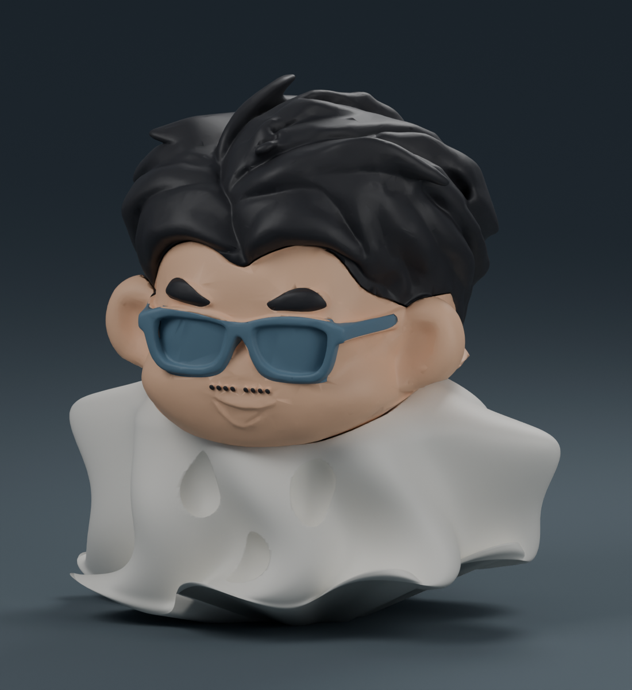

披風裡的小陳晉・飄逸版・原配色一體成型

整隻一次列印，不需黏合頭、臉與身體。色塊是同一個物件內的材料區域，可在 Bambu Studio 的物件清單指定各區的線材。
完整原配色共四色，可使用 X1 Carbon 搭配一台四槽 AMS。
- 槽位 1：白色披風（#F3F0E7）
- 槽位 2：膚色臉（#F5C39E）
- 槽位 3：黑髮眉毛與鬍子（#27272B）
- 槽位 4：藍灰眼鏡（#607F92）
請以「開啟專案」載入 3MF，保留各部位的顏色與線材分配。預設為 X1 Carbon／0.4 mm／PLA／0.16 mm 層高，含樹狀支撐、底邊和多色擦料塔。依實際 AMS 槽位重新對應線材。
範例估計 23 小時 16 分，耗材 388.01 g。原配色列印會換線並產生擦料；若希望縮短時間，可在同一商品選擇分件組裝。
約 10 公分高。已通過材料區域封閉性、連通、配置與切片檢查；尚未實體試印。
下載原配色一體成型 3MF